Slide_2 — Time Series Analysis · Performance Evaluation + Stationary Time Series · 34 หน้า
บทนี้แสดงสไลด์ Lecture 2 เกือบทุกหน้าตามลำดับ พร้อมคำอธิบายใต้แต่ละหน้า ข้อความที่ไฮไลต์สีเหลืองคือข้อความที่อาจารย์ใส่สีในสไลด์ บทนี้มีสองส่วน ส่วนแรกคือการแบ่งข้อมูลและการวัดความคลาดเคลื่อนของการพยากรณ์ ส่วนที่สองคือ stationarity ซึ่งเป็นเงื่อนไขพื้นฐานของโมเดลในบทถัดไปทั้งหมด ตัวอย่างและ Exercise ท้ายสไลด์มีการพิสูจน์เต็มทุกข้อ
บทนี้ยังไม่ได้รวมสิ่งที่อาจารย์พูดในวิดีโอ Class 2 จะเพิ่มภายหลังพร้อมระบุคลิปและเวลา
ส่วนการประเมิน: Hyndman & Athanasopoulos, Forecasting: Principles and Practice บทที่ 5.8 และ บทที่ 5.10 ส่วน stationarity: Shumway & Stoffer หน้า 19–20 ซึ่งสไลด์อ้างที่หน้า 25
| หัวข้อ | เนื้อหา | สไลด์ |
|---|---|---|
| 1 | ทำไมต้องประเมินโมเดล และ overfitting | 2–4 |
| 2 | Data partitioning | 5–12 |
| 3 | Forecast errors ห้าสูตร | 13–17 |
| 4 | แนวคิดของ stationarity | 19–23 |
| 5 | Strictly stationary | 24–29 |
| 6 | Weakly stationary | 30–32 |
| 7 | Check stationarity: ตัวอย่างสามข้อ | 33 |
| 8 | Exercise: สามโมเดล | 34 |
| 9 | แบบฝึกท้ายบท | — |
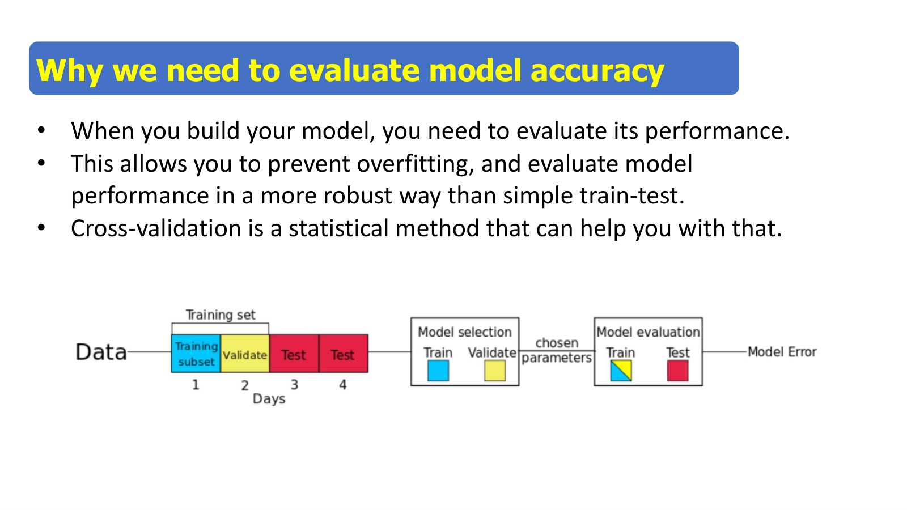
เมื่อสร้างโมเดลแล้วต้องประเมิน performance เพื่อป้องกัน overfitting และประเมินโมเดลอย่างมั่นคงกว่าการแบ่ง train กับ test แบบง่าย วิธีทางสถิติที่ใช้คือ cross-validation แผนภาพในสไลด์ใช้ข้อมูล 4 วัน วันที่ 1 เป็น training subset วันที่ 2 เป็น validate และวันที่ 3 ถึง 4 เป็น test ขั้น model selection ฝึกโมเดลด้วยวันที่ 1 แล้ววัดผลบนวันที่ 2 เพื่อเลือกพารามิเตอร์ ขั้น model evaluation ฝึกใหม่ด้วยวันที่ 1 และ 2 รวมกัน แล้ววัดบนวันที่ 3 ถึง 4 ซึ่งโมเดลไม่เคยเห็น ได้ค่า model error ข้อมูล test อยู่หลังสุดตามเวลาเสมอ เปรียบได้กับการเตรียมสอบ: ฝึกกับโจทย์ชุดหนึ่ง ลองทำโจทย์อีกชุดเพื่อปรับวิธีอ่าน แล้ววัดผลจริงด้วยข้อสอบที่ไม่เคยเห็น
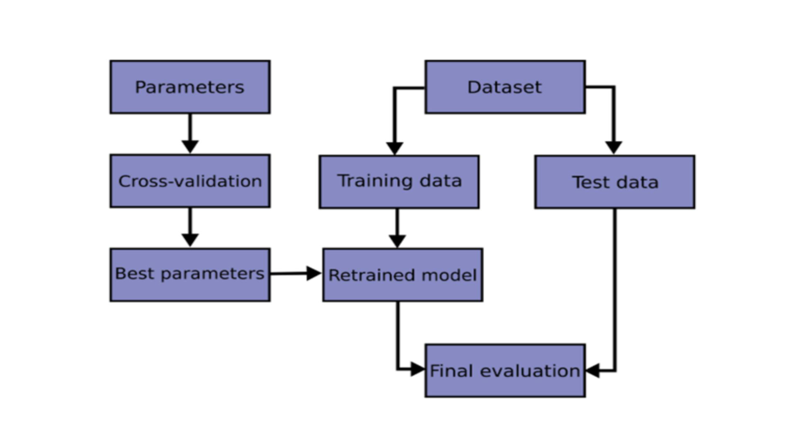
ลำดับงานมีสี่ขั้น ขั้นแรกแยก dataset เป็น training data และ test data ตั้งแต่ต้น ขั้นที่สองนำพารามิเตอร์ที่เป็นไปได้ไปทำ cross-validation บน training data เพื่อหา best parameters ขั้นที่สามใช้ best parameters ฝึก retrained model บน training data ทั้งหมด ขั้นที่สี่ทำ final evaluation บน test data ข้อสำคัญคือ test data ถูกใช้ครั้งเดียวในตอนท้าย ถ้านำ test data มาช่วยเลือกพารามิเตอร์ด้วย ผลที่วัดได้จะดีเกินจริง เพราะโมเดลถูกปรับให้เข้ากับข้อมูลชุดนั้นแล้ว
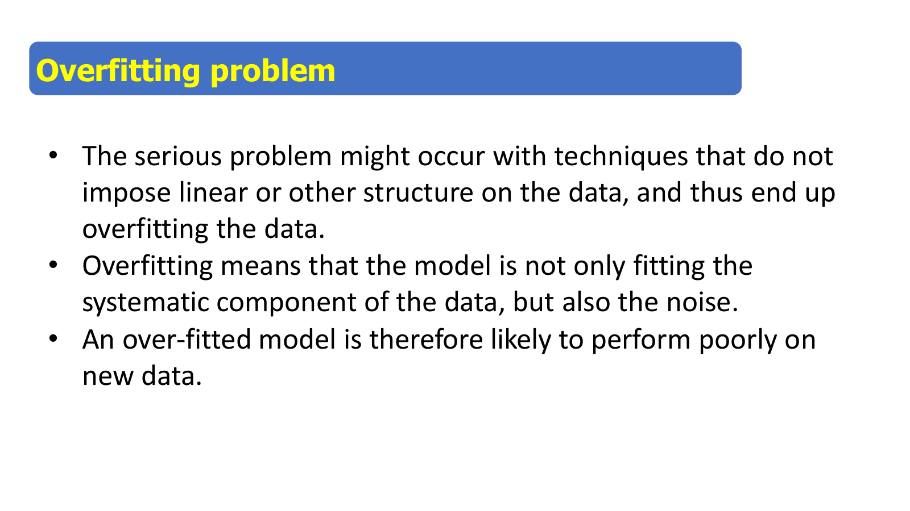
ปัญหาร้ายแรงเกิดได้กับเทคนิคที่ไม่กำหนดโครงสร้างเชิงเส้นหรือโครงสร้างอื่นให้ข้อมูล ซึ่งทำให้ overfit ข้อมูล Overfitting หมายความว่าโมเดลไม่ได้ fit เฉพาะ systematic component ของข้อมูล แต่ fit noise ด้วย โมเดลที่ overfit จึงมีแนวโน้มทำงานได้ไม่ดีกับข้อมูลใหม่ เปรียบได้กับนักเรียนที่ท่องเฉลยข้อสอบเก่าได้ทุกข้อ ได้คะแนนเต็มเมื่อสอบด้วยข้อสอบชุดเดิม แต่ทำข้อสอบใหม่ไม่ได้ เพราะจำคำตอบโดยไม่เข้าใจหลัก ตามภาษาของ Lesson 1 systematic component คือ trend และ seasonal ส่วน noise คือส่วนสุ่มที่ไม่ซ้ำในอนาคต โมเดลที่จำ noise จึงพยากรณ์พลาด
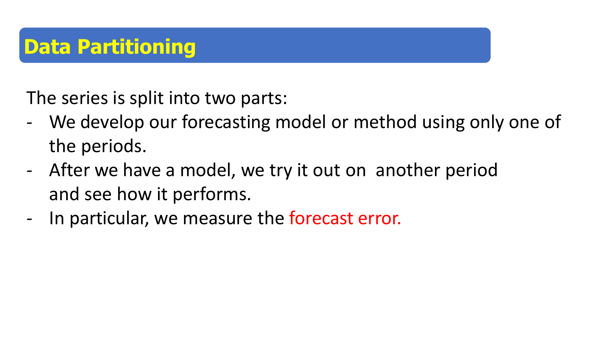
Series ถูกแบ่งเป็นสองช่วง ช่วงหนึ่งใช้พัฒนาโมเดลหรือวิธีพยากรณ์ เมื่อได้โมเดลแล้วจึงทดลองกับอีกช่วงหนึ่งเพื่อดูว่าทำงานได้ดีเพียงใด สิ่งที่วัดคือ forecast error. ซึ่งนิยามในหัวข้อ 3
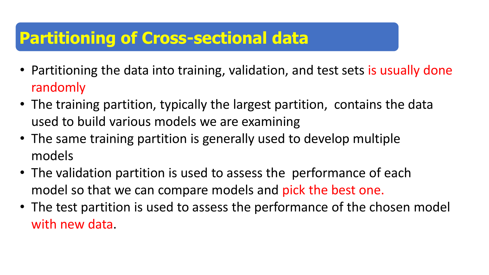
สำหรับ cross-sectional data การแบ่งเป็น training, validation และ test sets is usually done randomly Training partition ซึ่งโดยปกติใหญ่ที่สุด เก็บข้อมูลที่ใช้สร้างโมเดลหลายตัว Validation partition ใช้ประเมินแต่ละโมเดลเพื่อเปรียบเทียบและ pick the best one. Test partition ใช้ประเมินโมเดลที่เลือกแล้ว with new data การสุ่มทำได้เพราะแต่ละแถวของ cross-sectional data เป็นอิสระต่อกัน ลำดับไม่มีความหมาย
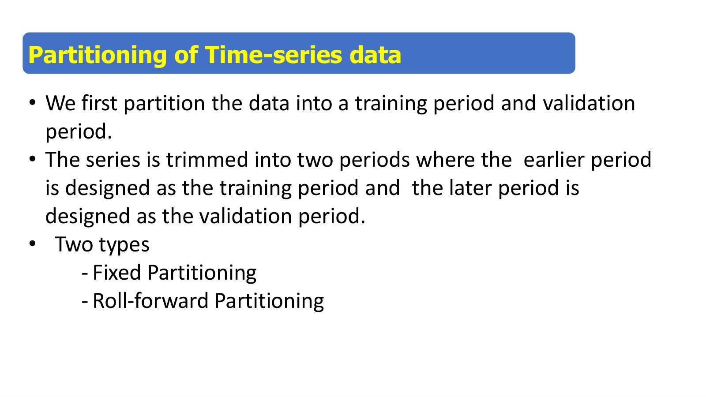
Time series สุ่มแบ่งไม่ได้ ข้อมูลถูกตัดเป็นสองช่วง ช่วงแรกเป็น training period และช่วงหลังเป็น validation period เหตุผลคือ ถ้าสุ่ม จุดของปี 2003 อาจไปอยู่ใน training ขณะที่จุดของปี 2001 อยู่ใน validation ซึ่งเท่ากับใช้อนาคตพยากรณ์อดีต ในการใช้งานจริงไม่มีข้อมูลอนาคตให้ใช้ การแบ่งจึงต้องเลียนแบบสถานการณ์จริง คือรู้เฉพาะอดีตแล้วพยากรณ์ไปข้างหน้า การแบ่งมีสองชนิด คือ Fixed Partitioning และ Roll-forward Partitioning
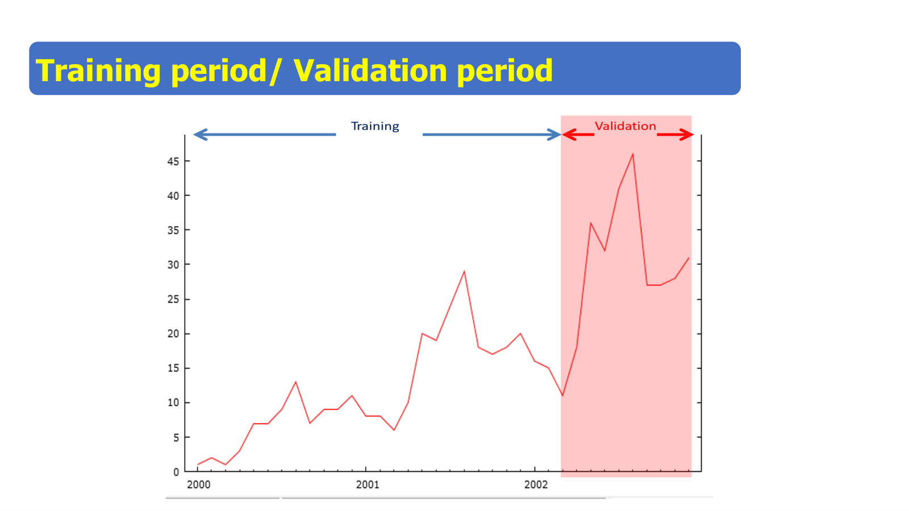
ข้อมูลรายเดือนตั้งแต่ปี 2000 ถึงต้นปี 2002 เป็น training ค่าเพิ่มจาก 1 ถึงประมาณ 29 แล้วลดเหลือ 11 ช่วงท้ายปี 2002 เป็น validation ค่ากระโดดเป็น 36 และ 46 โมเดลที่เห็นเฉพาะ training ไม่เคยเห็นค่าที่เกิน 29 จึงเป็นการทดสอบว่าพยากรณ์ช่วงหลังได้หรือไม่ Fixed partitioning ตัดข้อมูลครั้งเดียวและวัด error ครั้งเดียว
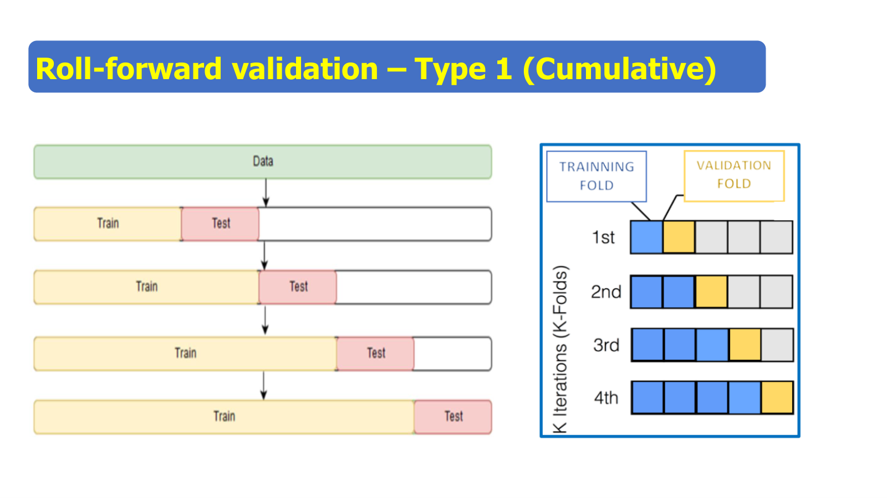
ในแบบ cumulative รอบที่ 1 ใช้ช่วง 1 เป็น training และช่วง 2 เป็น test รอบที่ 2 ใช้ช่วง 1 ถึง 2 เป็น training และช่วง 3 เป็น test รอบที่ 3 ใช้ช่วง 1 ถึง 3 และรอบที่ 4 ใช้ช่วง 1 ถึง 4 โดย test คือช่วง 5 Training ยาวขึ้นทุกรอบเพราะสะสมข้อมูลเก่าไว้ทั้งหมด ส่วน test มีขนาดเท่าเดิมและอยู่ถัดจาก training เสมอ ได้ค่า error 4 ค่ามาเฉลี่ย ซึ่งเชื่อถือได้มากกว่าการตัดครั้งเดียว
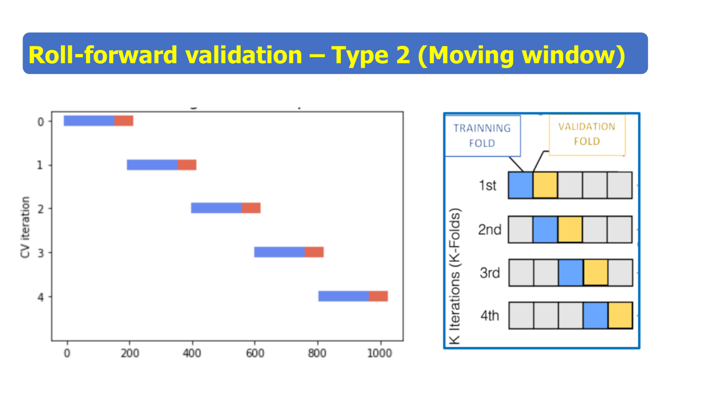
ในแบบ moving window กับข้อมูล 1,000 จุด รอบแรกใช้ training ประมาณจุดที่ 0 ถึง 150 และ test ประมาณ 150 ถึง 210 รอบถัดไป training ประมาณ 200 ถึง 350 ต่อเนื่องไปจนรอบสุดท้ายที่ประมาณ 800 ถึง 960 ความยาวของ training คงที่ หน้าต่างเลื่อนไปข้างหน้าและข้อมูลเก่าถูกทิ้ง แบบนี้เหมาะเมื่อพฤติกรรมในอดีตที่ไกลมากไม่เกี่ยวข้องกับปัจจุบันแล้ว
| Type 1 Cumulative | Type 2 Moving window | |
|---|---|---|
| จุดเริ่มของ training | จุดเดิมทุกรอบ | เลื่อนไปทุกรอบ |
| ความยาวของ training | ยาวขึ้นทุกรอบ | คงที่ |
| ข้อมูลเก่า | เก็บไว้ทั้งหมด | ทิ้งไป |
| ตำแหน่งของ test | ถัดจาก training ทันที ทั้งสองแบบ | |
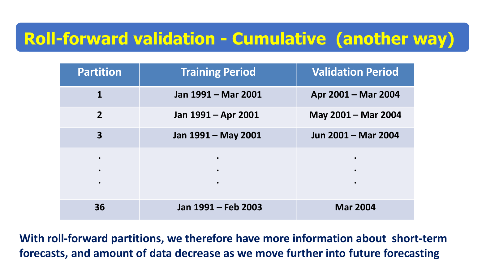
อีกวิธีของแบบ cumulative: training เริ่มที่ Jan 1991 ทุกรอบ และจบที่ Mar 2001, Apr 2001, May 2001 ไปจนถึง Feb 2003 รวม 36 partitions ส่วน validation คือทุกเดือนที่เหลือจนถึง Mar 2004 Partition แรกมี validation ตั้งแต่ Apr 2001 ถึง Mar 2004 รวม 36 เดือน partition ที่สองมี 35 เดือน และ partition สุดท้ายมี Mar 2004 เดือนเดียว ผลคือการพยากรณ์ 1 เดือนข้างหน้ามีให้วัด 36 ครั้ง แต่การพยากรณ์ 36 เดือนข้างหน้ามีให้วัดครั้งเดียว ตรงกับข้อความสีในสไลด์: With roll-forward partitions, we therefore have more information about short-term forecasts, and amount of data decrease as we move further into future forecasting
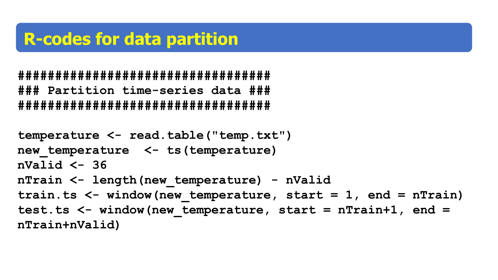
โค้ดหน้านี้ทำ fixed partitioning กับข้อมูลอุณหภูมิ โดยกันจุดท้าย 36 จุดไว้เป็น validation
temperature <- read.table("temp.txt")
new_temperature <- ts(temperature)
nValid <- 36
nTrain <- length(new_temperature) - nValid
train.ts <- window(new_temperature, start = 1, end = nTrain)
test.ts <- window(new_temperature, start = nTrain+1, end = nTrain+nValid)| โค้ด | ทำอะไร |
|---|---|
| read.table("temp.txt") | อ่านไฟล์ข้อความเป็นตาราง |
| ts(temperature) | แปลงเป็นวัตถุ time series เพื่อให้ R รู้ว่าลำดับคือเวลา |
| nValid <- 36 | กำหนดให้ 36 จุดสุดท้ายเป็น validation |
| nTrain <- length(new_temperature) - nValid | จำนวนจุดที่เหลือเป็น training เช่น ถ้ามี 100 จุด ได้ nTrain = 64 |
| window(new_temperature, start = 1, end = nTrain) | ตัดช่วงแรก คือจุดที่ 1 ถึง 64 เป็น train.ts |
| window(new_temperature, start = nTrain+1, end = nTrain+nValid) | ตัดช่วงหลัง คือจุดที่ 65 ถึง 100 เป็น test.ts |
ฟังก์ชัน window() ตัดช่วงของ time series ตามเวลาเริ่มและเวลาจบ จึงรักษาลำดับเวลาไว้ ช่วงแรกเป็น training และช่วงหลังเป็น validation ตามหลักของหน้า 7
window() สำหรับแบ่งข้อมูลให้ \(Y_t\) เป็นค่าจริง \(F_t\) เป็นค่าพยากรณ์ และ n เป็นจำนวนจุดที่วัด ความคลาดเคลื่อนของแต่ละจุดคือ \(e_t=Y_t-F_t\) คือค่าจริงลบค่าพยากรณ์ สไลด์สามหน้าถัดไปให้ตัววัดห้าตัว ซึ่งต่างกันที่วิธีรวม \(e_t\) เข้าด้วยกัน
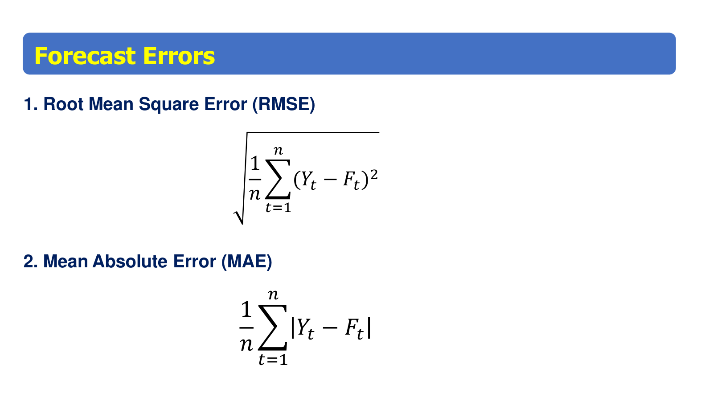
ตัววัดสองตัวแรกคือ 1. Root Mean Square Error (RMSE) ซึ่งเท่ากับ \(\sqrt{\tfrac1n\sum_{t=1}^{n}(Y_t-F_t)^2}\) และ 2. Mean Absolute Error (MAE) ซึ่งเท่ากับ \(\tfrac1n\sum_{t=1}^{n}|Y_t-F_t|\) ทั้งสองตัวกำจัดเครื่องหมายของ error เพื่อไม่ให้ค่าบวกและลบหักล้างกัน RMSE ใช้การยกกำลังสองแล้วถอดราก error ขนาดใหญ่จึงถูกขยายมากกว่า เช่น error ขนาด 8 กลายเป็น 64 ขณะที่ error ขนาด 1 ยังเป็น 1 ส่วน MAE ใช้ค่าสัมบูรณ์ ทุก error มีน้ำหนักตามขนาดจริง ทั้งสองตัวมีหน่วยเดียวกับข้อมูล
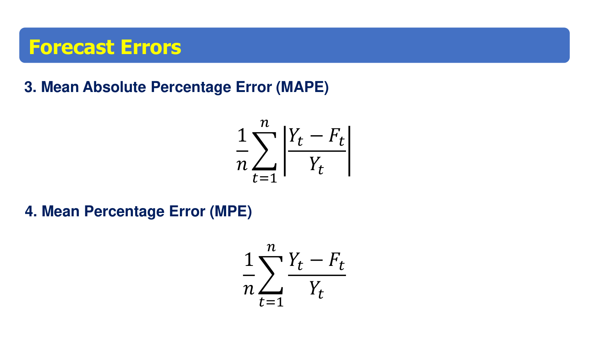
ตัววัดสองตัวถัดไปหาร error ด้วยค่าจริง จึงเป็นสัดส่วนและไม่มีหน่วย 3. Mean Absolute Percentage Error (MAPE) คือ \(\tfrac1n\sum\left|\dfrac{Y_t-F_t}{Y_t}\right|\) และ 4. Mean Percentage Error (MPE) คือ \(\tfrac1n\sum\dfrac{Y_t-F_t}{Y_t}\) เมื่อไม่มีหน่วย จึงเทียบความแม่นระหว่างข้อมูลที่มีสเกลต่างกันได้ เช่น ยอดขายหลักร้อยกับหลักล้าน MPE ไม่ใส่ค่าสัมบูรณ์ จึงคงเครื่องหมายไว้และบอกทิศของความเอนเอียงได้
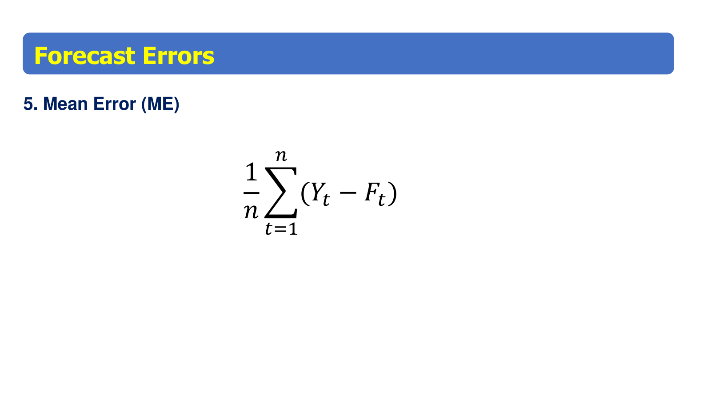
ตัวสุดท้ายคือ 5. Mean Error (ME) ซึ่งเท่ากับ \(\tfrac1n\sum(Y_t-F_t)\) เป็นค่าเฉลี่ยของ error โดยตรง เนื่องจาก error คือค่าจริงลบค่าพยากรณ์ ME ที่ติดลบหมายความว่าโดยเฉลี่ยพยากรณ์สูงกว่าค่าจริง และ ME ที่เป็นบวกหมายความว่าพยากรณ์ต่ำกว่าค่าจริง ME ที่ใกล้ 0 ไม่ได้แปลว่าแม่น เพราะ error บวกและลบหักล้างกันได้
| ตัววัด | จัดการ error อย่างไร | บอกทิศของ bias | มีหน่วยของ Y |
|---|---|---|---|
| RMSE | ยกกำลังสอง เฉลี่ย ถอดราก | ไม่ | มี |
| MAE | ค่าสัมบูรณ์ แล้วเฉลี่ย | ไม่ | มี |
| MAPE | หารด้วย Y ค่าสัมบูรณ์ แล้วเฉลี่ย | ไม่ | ไม่มี |
| MPE | หารด้วย Y แล้วเฉลี่ย | บอก | ไม่มี |
| ME | เฉลี่ยโดยตรง | บอก | มี |
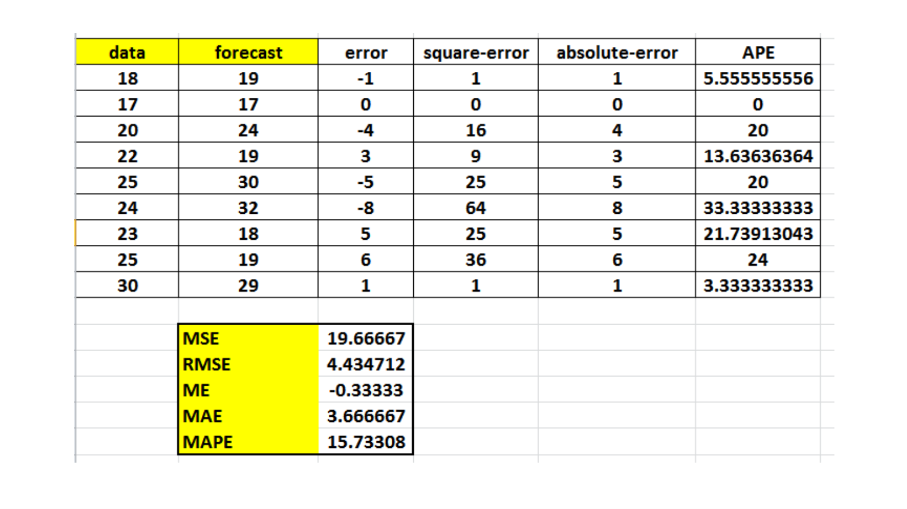
ตารางในสไลด์มีค่าจริง 9 จุด คือ 18, 17, 20, 22, 25, 24, 23, 25, 30 และค่าพยากรณ์ 19, 17, 24, 19, 30, 32, 18, 19, 29 ผลที่สไลด์ให้คือ MSE = 19.66667, RMSE = 4.434712, ME = −0.33333, MAE = 3.666667 และ MAPE = 15.73308 การ์ดถัดไปคำนวณทุกค่าทีละคอลัมน์
| Y | F | e = Y − F | e² | |e| | |e| ÷ Y × 100 |
|---|---|---|---|---|---|
| 18 | 19 | −1 | 1 | 1 | 5.556 |
| 17 | 17 | 0 | 0 | 0 | 0 |
| 20 | 24 | −4 | 16 | 4 | 20.000 |
| 22 | 19 | 3 | 9 | 3 | 13.636 |
| 25 | 30 | −5 | 25 | 5 | 20.000 |
| 24 | 32 | −8 | 64 | 8 | 33.333 |
| 23 | 18 | 5 | 25 | 5 | 21.739 |
| 25 | 19 | 6 | 36 | 6 | 24.000 |
| 30 | 29 | 1 | 1 | 1 | 3.333 |
| ผลรวม | −3 | 177 | 33 | 141.598 |
\(-3/9=-0.3333\) ติดลบเล็กน้อย โดยเฉลี่ยพยากรณ์สูงกว่าค่าจริงเล็กน้อย
\(\text{MSE}=177/9=19.6667\) และ \(\text{RMSE}=\sqrt{19.6667}=4.4347\)
\(33/9=3.6667\)
\(141.598/9=15.733\) เปอร์เซ็นต์
ใส่เครื่องหมายตาม e: \((-5.556+0-20+13.636-20-33.333+21.739+24+3.333)/9=-16.181/9=-1.80\) เปอร์เซ็นต์
RMSE (4.43) มากกว่าหรือเท่ากับ MAE (3.67) เสมอ เพราะการยกกำลังสองขยาย error ขนาดใหญ่ ในที่นี้คือ −8 และ 6 ถ้า RMSE ห่างจาก MAE มาก แสดงว่ามี error ขนาดใหญ่ปนอยู่ และ ME ที่ −0.33 เทียบกับ MAE ที่ 3.67 แสดงว่า error ส่วนใหญ่หักล้างกัน โมเดลนี้ไม่เอนเอียงมากแต่คลาดเคลื่อนเฉลี่ยเกือบ 4 หน่วย
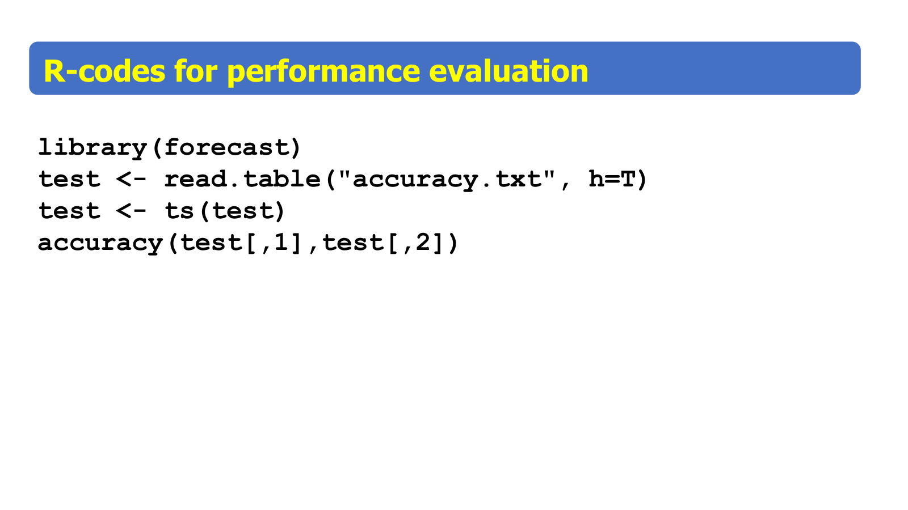
ใน R ไม่ต้องคำนวณตัววัดทีละตัว ฟังก์ชัน accuracy ของ package forecast ให้ทั้งห้าค่าในคำสั่งเดียว ไฟล์ accuracy.txt มีสองคอลัมน์ คือค่าพยากรณ์และค่าจริงของตารางหน้า 16 ผลที่ได้จึงตรงกับที่คำนวณมือ: ME = −0.333, RMSE = 4.435, MAE = 3.667 และ MAPE = 15.73
library(forecast)
test <- read.table("accuracy.txt", h=T)
test <- ts(test)
accuracy(test[,1],test[,2])| โค้ด | ทำอะไร |
|---|---|
| library(forecast) | เรียก package forecast ซึ่งมีฟังก์ชัน accuracy |
| read.table("accuracy.txt", h=T) | อ่านไฟล์ h=T คือบรรทัดแรกเป็นชื่อคอลัมน์ |
| ts(test) | แปลงเป็น time series |
| accuracy(test[,1],test[,2]) | อาร์กิวเมนต์แรกคือค่าพยากรณ์ อาร์กิวเมนต์ที่สองคือค่าจริง ผลที่ได้คือ ME, RMSE, MAE, MPE และ MAPE พร้อมกัน |
test[,1] หมายถึงคอลัมน์ที่ 1 ของตาราง และ test[,2] หมายถึงคอลัมน์ที่ 2 ฟังก์ชัน accuracy คำนวณ error เป็นค่าจริงลบค่าพยากรณ์เช่นเดียวกับสูตรในสไลด์
accuracy() ได้ครึ่งหลังของ Lecture 2 เปลี่ยนเรื่องไปที่สมบัติของ process ที่ทำให้สร้างโมเดลได้ คำถามตั้งต้นคือ ถ้าข้อมูลไม่เป็นอิสระต่อกัน ยังเหลืออะไรที่คงที่ให้ยึดได้บ้าง
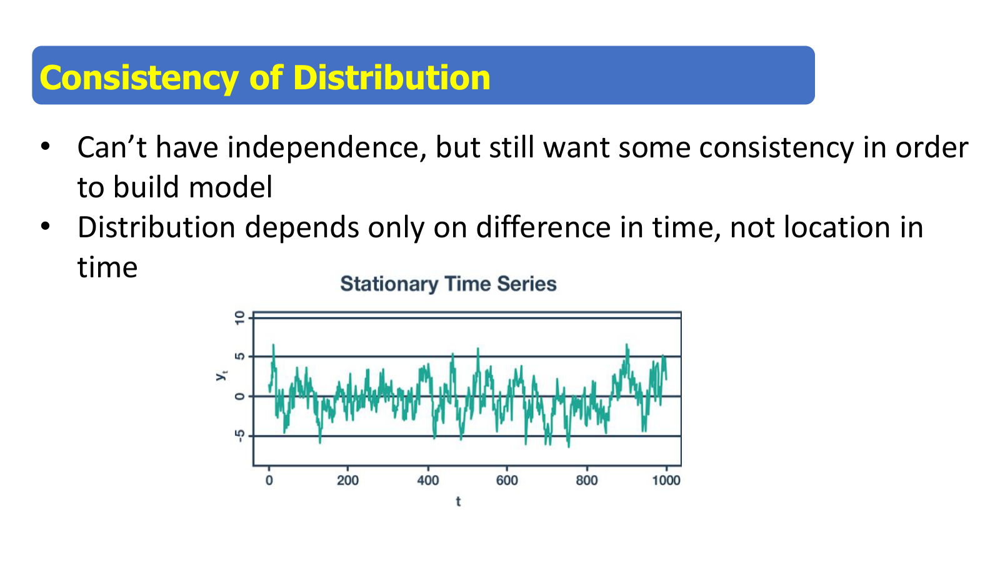
ใน time series ค่าที่อยู่ติดกันสัมพันธ์กัน จึงไม่มีความเป็นอิสระ แต่การสร้างโมเดลยังต้องการ consistency บางอย่าง สไลด์ระบุสิ่งที่ต้องการ: การแจกแจงขึ้นกับ difference in time เท่านั้น ไม่ขึ้นกับ location in time หมายความว่าความสัมพันธ์ระหว่างค่าสองค่าที่ห่างกัน 3 ช่วงเวลา ต้องเหมือนกันไม่ว่าจะดูที่ต้นหรือปลายของข้อมูล กราฟในสไลด์มี 1,000 จุดที่แกว่งรอบ 0 และเกือบทั้งหมดอยู่ระหว่าง −5 ถึง 5 ตลอดช่วง ถ้าตัดช่วง 0 ถึง 200 มาเทียบกับช่วง 800 ถึง 1,000 ระดับกลางและความกว้างเท่ากัน
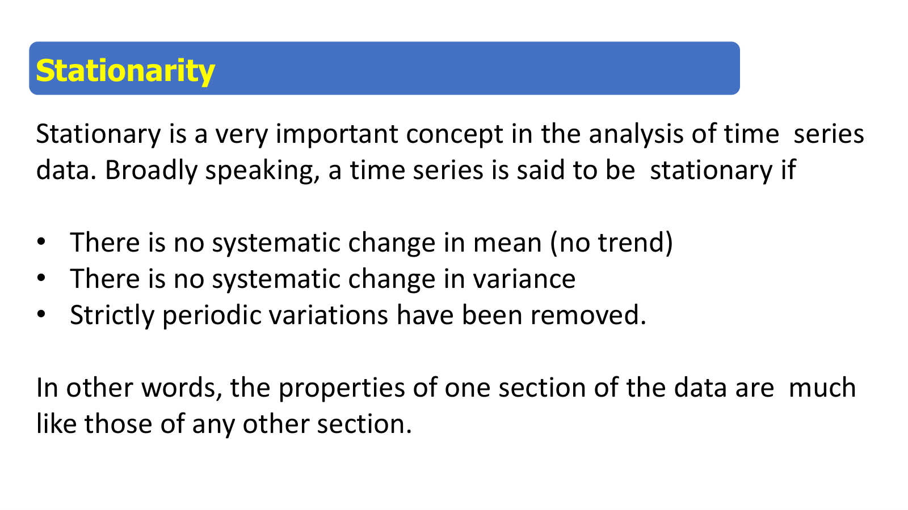
Stationary เป็นแนวคิดสำคัญของการวิเคราะห์ time series กล่าวอย่างกว้าง time series เป็น stationary ถ้ามีสามข้อ คือ ไม่มีการเปลี่ยนแปลงอย่างเป็นระบบของ mean (ไม่มี trend) ไม่มีการเปลี่ยนแปลงอย่างเป็นระบบของ variance และ strictly periodic variations ถูกนำออกแล้ว (ไม่มี seasonal) กล่าวอีกแบบ สมบัติของข้อมูลช่วงหนึ่งคล้ายกับของช่วงอื่นใดก็ตาม เปรียบได้กับเกมที่กติกาไม่เปลี่ยน: ผลของแต่ละตายังสุ่ม แต่ลูกเต๋าเป็นลูกเดิมตลอด สถิติของ 100 ตาแรกจึงคล้ายกับของ 100 ตาสุดท้าย
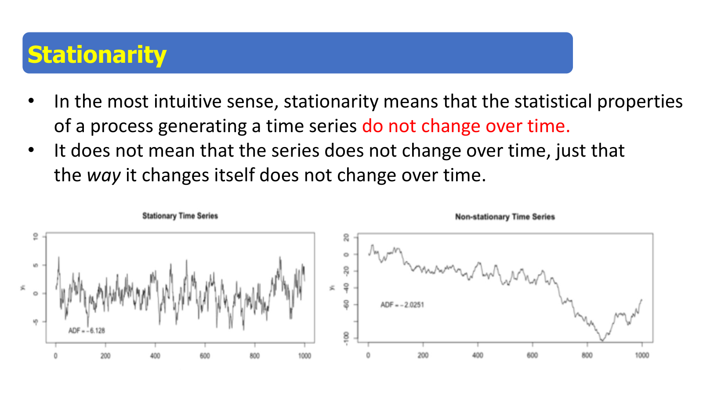
Stationarity หมายความว่าสมบัติทางสถิติของ process ที่สร้าง time series do not change over time. สไลด์ย้ำว่าไม่ได้หมายความว่า series ไม่เปลี่ยนตามเวลา แต่หมายความว่าวิธีที่มันเปลี่ยนไม่เปลี่ยนตามเวลา กราฟแรกแกว่งรอบ 0 ระหว่าง −5 ถึง 5 ตลอดช่วง มีค่า ADF เท่ากับ −6.128 ค่าเปลี่ยนตลอดเวลาแต่ลักษณะของการเปลี่ยนเหมือนเดิม จึงเป็น stationary กราฟที่สองลดลงจาก 0 ไปถึงประมาณ −100 ที่เวลาประมาณ 850 แล้วกลับขึ้นมาประมาณ −55 มีค่า ADF เท่ากับ −2.0251 ระดับเฉลี่ยเปลี่ยนตามช่วงเวลา จึงไม่ stationary ค่า ADF มาจาก Augmented Dickey-Fuller test ซึ่งค่าที่ติดลบมากสนับสนุนว่า stationary รายละเอียดของการทดสอบอยู่ใน Lesson 7
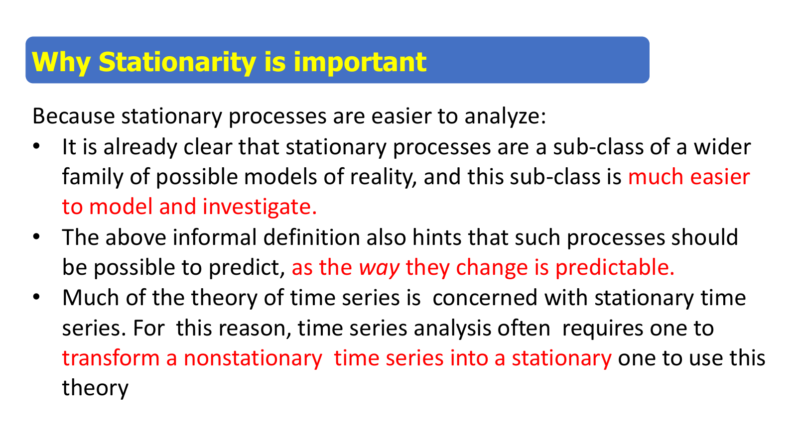
Stationary processes วิเคราะห์ได้ง่ายกว่า ด้วยเหตุผลสามข้อ ข้อแรก เป็น sub-class ของโมเดลที่เป็นไปได้ทั้งหมด และ sub-class นี้ much easier to model and investigate. ข้อที่สอง process เช่นนี้ควรพยากรณ์ได้ as the way they change is predictable. ข้อที่สาม ทฤษฎีของ time series ส่วนใหญ่เกี่ยวกับ stationary time series การวิเคราะห์จึงมักต้อง transform a nonstationary time series into a stationary one ก่อนใช้ทฤษฎี วิธีแปลงคือ detrending และ differencing ใน Lesson 3 เหตุผลเชิงปฏิบัติคือ ข้อมูลจริงมีเพียงเส้นเดียว ถ้าสมบัติคงที่ตามเวลา ค่าที่ต่างเวลากันใช้ประมาณค่าเฉลี่ยและ covariance ตัวเดียวกันได้ ถ้าสมบัติเปลี่ยนทุกเวลา แต่ละเวลาจะมีข้อมูลเพียงค่าเดียวให้ประมาณ
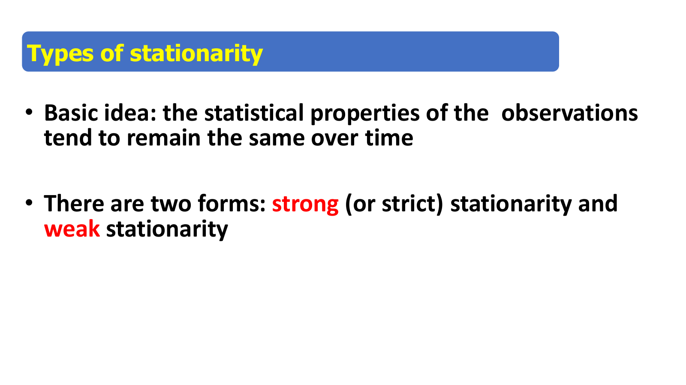
แนวคิดพื้นฐานคือสมบัติทางสถิติของค่าสังเกตมีแนวโน้มคงเดิมตามเวลา Stationarity มีสองรูปแบบ คือ strong (หรือ strict) stationarity และ weak stationarity แบบแรกกำหนดเงื่อนไขกับการแจกแจงทั้งหมด แบบที่สองกำหนดเฉพาะค่าเฉลี่ยและ covariance
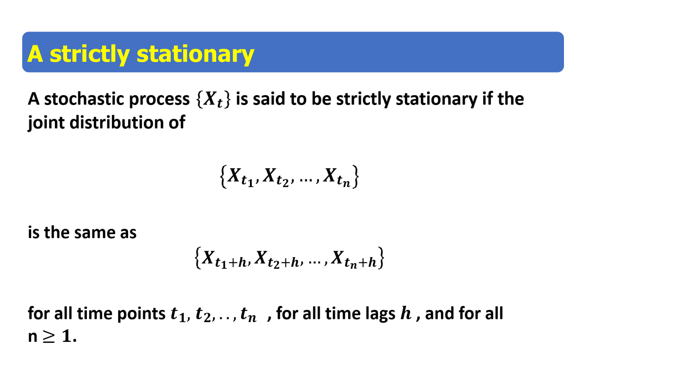
\(\{X_t\}\) เป็น strictly stationary ถ้า joint distribution ของ \(\{X_{t_1},X_{t_2},\dots,X_{t_n}\}\) เหมือนกับของ \(\{X_{t_1+h},X_{t_2+h},\dots,X_{t_n+h}\}\) สำหรับทุกชุดของจุดเวลา ทุก lag h และทุก \(n\ge1\) หมายความว่า เลือกจุดเวลากี่จุดก็ได้ แล้วเลื่อนทั้งชุดไป h ช่วงเวลา การแจกแจงร่วมต้องเหมือนเดิมทุกประการ ตัวอย่าง: การแจกแจงร่วมของ \((X_1,X_3)\) ต้องเหมือนกับของ \((X_{11},X_{13})\) และของ \((X_{101},X_{103})\)
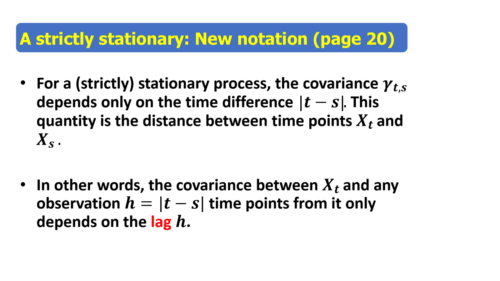
สำหรับ stationary process covariance \(\gamma_{t,s}\) ขึ้นกับ time difference \(|t-s|\) เท่านั้น ค่าความต่างนี้เรียกว่า lag และเขียนว่า h สัญกรณ์สองตัวห้อยจาก Lesson 1 จึงย่อเหลือตัวห้อยเดียวได้ เพราะเมื่อรู้ระยะห่างก็รู้ค่าทั้งหมด ไม่ต้องรู้ว่าอยู่ที่เวลาใด
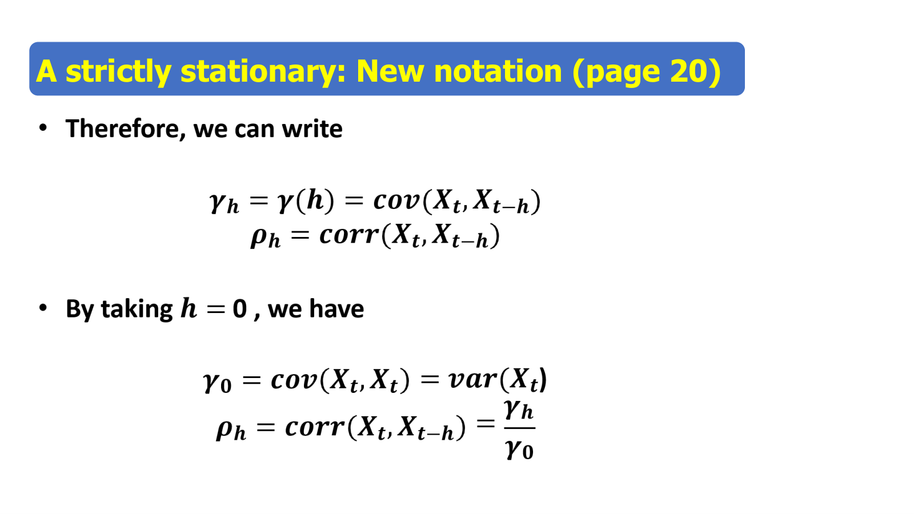
สัญกรณ์ใหม่คือ \(\gamma_h=\gamma(h)=\mathrm{cov}(X_t,X_{t-h})\) และ \(\rho_h=\mathrm{corr}(X_t,X_{t-h})\) กรณี \(h=0\) ได้ \(\gamma_0=\mathrm{var}(X_t)\) และสูตรของ ACF ย่อเหลือ \(\rho_h=\gamma_h/\gamma_0\) สูตรนี้มาจากสูตรเดิม \(\gamma_{t,s}/\sqrt{\gamma_{t,t}\gamma_{s,s}}\) โดยตัวหารคือ \(\sqrt{\gamma_0\cdot\gamma_0}=\gamma_0\) เพราะความแปรปรวนเท่ากันทุกเวลา สัญกรณ์ \(\gamma(h)\) และ \(\rho(h)\) ใช้ตลอดบทที่เหลือของวิชา
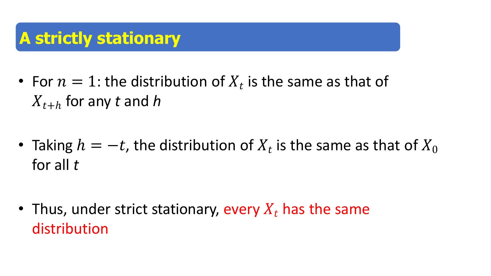
เมื่อ \(n=1\) นิยามบอกว่าการแจกแจงของ \(X_t\) เหมือนกับของ \(X_{t+h}\) สำหรับทุก t และ h เลือก \(h=-t\) จะได้ว่าการแจกแจงของ \(X_t\) เหมือนกับของ \(X_0\) ทุก t ดังนั้นภายใต้ strict stationarity every X_t has the same distribution ผลที่ตามมาคือ \(E(X_t)\) และ \(\mathrm{Var}(X_t)\) คงที่ทุกเวลา เพราะค่าทั้งสองคำนวณจากการแจกแจงเดียวกัน
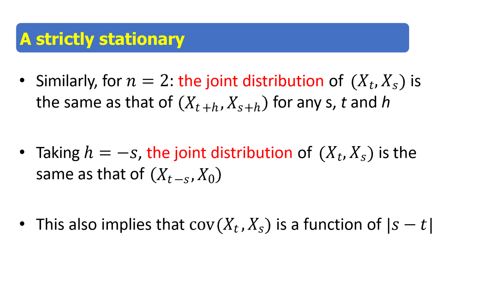
เมื่อ \(n=2\) นิยามบอกว่า the joint distribution ของ \((X_t,X_s)\) เหมือนกับของ \((X_{t+h},X_{s+h})\) สำหรับทุก s, t และ h เลือก \(h=-s\) จะได้ว่าเหมือนกับการแจกแจงของ \((X_{t-s},X_0)\) ซึ่งขึ้นกับ t และ s ผ่านค่า \(t-s\) เท่านั้น ดังนั้น \(\mathrm{cov}(X_t,X_s)\) เป็นฟังก์ชันของ \(|s-t|\) เท่านั้น สองหน้านี้รวมกันแสดงว่า strict stationarity ให้ผลสามข้อ คือ mean คงที่ variance คงที่ และ covariance ขึ้นกับ lag เท่านั้น
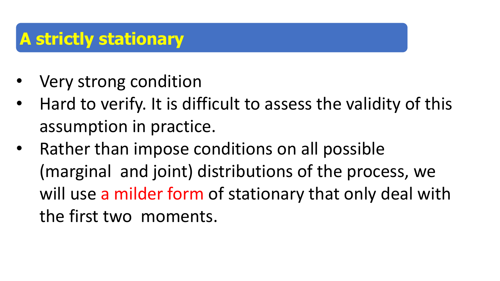
Strict stationarity เป็นเงื่อนไขที่เข้มมาก และตรวจสอบยาก การประเมินว่าสมมติฐานนี้เป็นจริงในทางปฏิบัติทำได้ยาก เพราะต้องรู้การแจกแจงร่วมของทุกชุดของจุดเวลา ขณะที่มีข้อมูลเพียงเส้นเดียว แทนที่จะกำหนดเงื่อนไขกับการแจกแจงทั้งหมด ทั้ง marginal และ joint จึงใช้ a milder form ของ stationarity ที่เกี่ยวข้องเฉพาะ first two moments
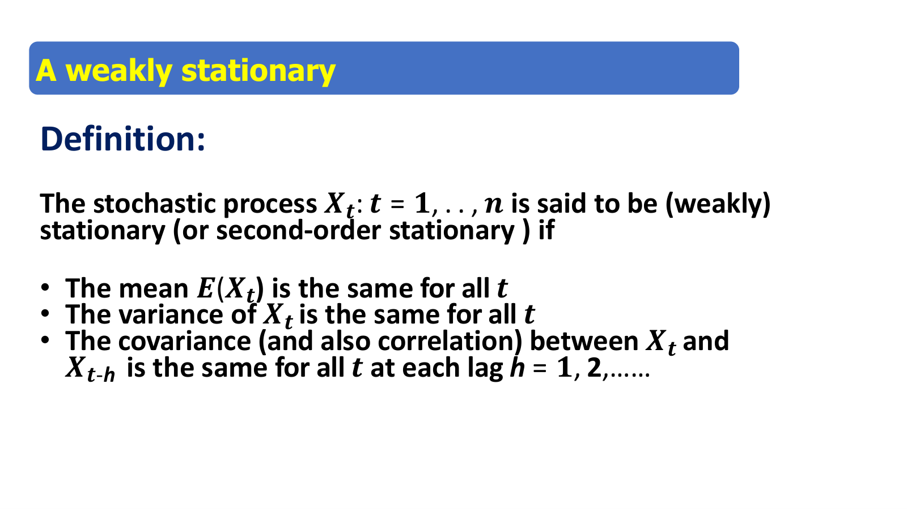
Definition: stochastic process \(\{X_t:t=1,\dots,n\}\) เป็น (weakly) stationary หรือ second-order stationary ถ้ามีสามข้อ ข้อแรก mean \(E(X_t)\) เท่ากันทุก t ข้อที่สอง variance ของ \(X_t\) เท่ากันทุก t ข้อที่สาม covariance และ correlation ระหว่าง \(X_t\) กับ \(X_{t-h}\) เท่ากันทุก t ที่แต่ละ lag \(h=1,2,\dots\) สามข้อนี้คือผลสามข้อของ strict stationarity จากหัวข้อ 5 weak stationarity จึงเก็บเฉพาะผลที่ต้องใช้ และทิ้งเงื่อนไขเรื่องการแจกแจงทั้งหมด
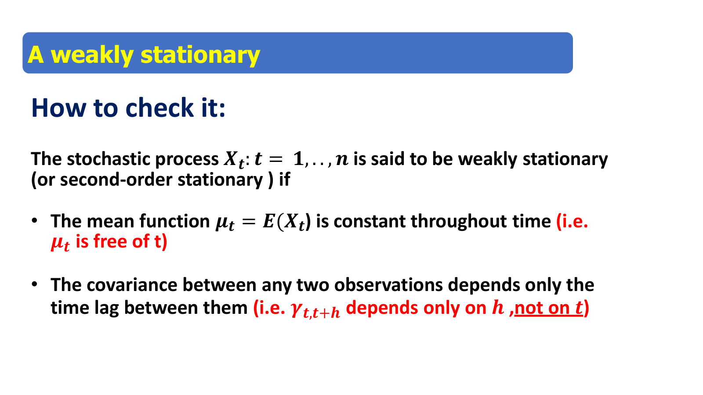
How to check it: ตรวจสองข้อ ข้อแรก mean function \(\mu_t=E(X_t)\) คงที่ตลอดเวลา (i.e. μ_t is free of t) ข้อที่สอง covariance ระหว่างค่าสังเกตสองค่าขึ้นกับ time lag ระหว่างกันเท่านั้น (i.e. γ_{t,t+h} depends only on h, not on t) เงื่อนไข variance คงที่รวมอยู่ในข้อที่สองแล้ว เพราะเมื่อ \(h=0\) ค่า \(\gamma_{t,t}\) คือ variance ซึ่งต้องไม่ขึ้นกับ t
ต้องตรวจทั้งสองข้อ mean ที่คงที่อย่างเดียวไม่พอ ตัวอย่างที่ 3 ในหัวข้อ 7 ผ่านข้อแรกแต่ไม่ผ่านข้อที่สอง
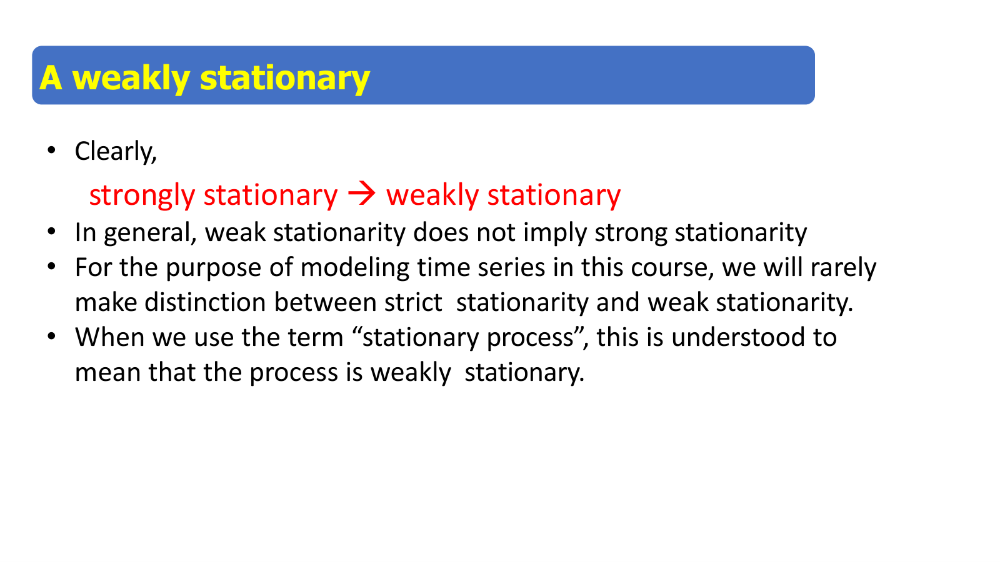
สไลด์ระบุว่า strongly stationary → weakly stationary คือ strong ให้ weak เสมอ ตามที่หัวข้อ 5 แสดง แต่โดยทั่วไป weak stationarity ไม่ได้ให้ strong stationarity เพราะ mean และ covariance ที่คงที่ไม่ได้บังคับให้การแจกแจงทั้งหมดคงที่ สำหรับการสร้างโมเดลในวิชานี้ แทบไม่แยกความต่างระหว่างสองแบบ เมื่อใช้คำว่า “stationary process” ให้เข้าใจว่าหมายถึง weakly stationary
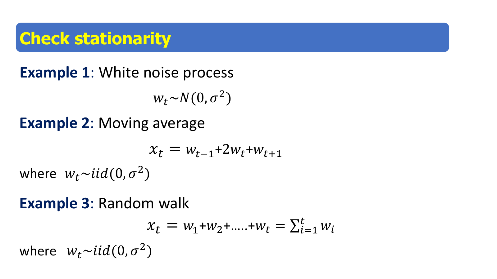
สไลด์ให้โมเดลสามตัวโดยไม่แสดงวิธีทำ ทั้งสามใช้ขั้นตอนในหัวข้อ 6 ตัวอย่างที่ 1 และ 3 มีผลจาก Lesson 1 อยู่แล้ว
\(E(w_t)=0\) ไม่ขึ้นกับ t
\(\gamma(h)=\sigma^2\) เมื่อ \(h=0\) และ \(\gamma(h)=0\) เมื่อ \(h\ne0\) ขึ้นกับ h เท่านั้น
\(E(x_t)=0+2(0)+0=0\) ไม่ขึ้นกับ t
| \(w_{t-1}\) | \(w_t\) | \(w_{t+1}\) | \(w_{t+2}\) | \(w_{t+3}\) | ผลรวมของผลคูณ | |
|---|---|---|---|---|---|---|
| \(x_t\) | 1 | 2 | 1 | \(1+4+1=6\) | ||
| \(x_{t+1}\) | 1 | 2 | 1 | \(2\cdot1+1\cdot2=4\) | ||
| \(x_{t+2}\) | 1 | 2 | 1 | \(1\cdot1=1\) |
คอลัมน์สุดท้ายได้จากการคูณสัมประสิทธิ์ของแถวนั้นกับแถว \(x_t\) ในคอลัมน์ที่มีค่าทั้งคู่
\(\rho(1)=4/6=2/3\) และ \(\rho(2)=1/6\)
\(E(x_t)=0\) ไม่ขึ้นกับ t ผ่านข้อแรก
w ทั้ง t ตัวเป็นอิสระต่อกัน: \(\mathrm{Var}(x_t)=t\sigma^2\)
\(x_t\) และ \(x_{t+h}\) มี w ที่ตรงกัน t ตัว: \(\gamma(t,t+h)=t\sigma^2\) มี t อยู่ในผล
ตัวอย่างนี้แสดงว่าต้องตรวจครบสองข้อ กราฟของ random walk ไม่มี trend ที่แน่นอน แต่ยิ่งเวลาผ่านไป ค่ายิ่งเดินออกห่างจากจุดเริ่มได้ไกลขึ้น
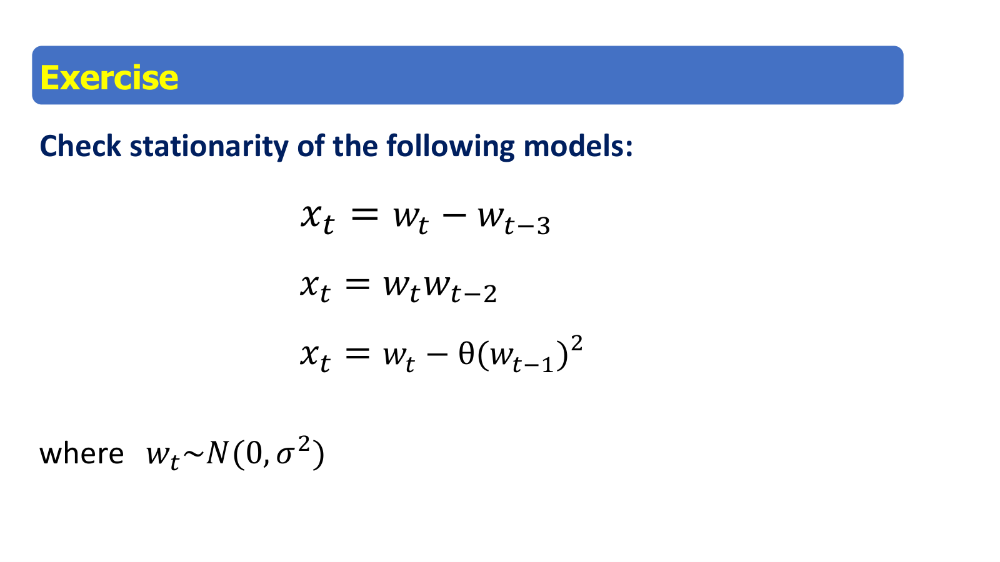
โจทย์คือ Check stationarity of the following models: โดย \(w_t\sim N(0,\sigma^2)\) สามโมเดลคือ \(x_t=w_t-w_{t-3}\), \(x_t=w_tw_{t-2}\) และ \(x_t=w_t-\theta(w_{t-1})^2\) สองข้อหลังมีการคูณและยกกำลังของ w จึงต้องใช้ moment อันดับสูงของการแจกแจงปกติ
| ปริมาณ | ค่า | เหตุผล |
|---|---|---|
| \(E(w)\) | 0 | ค่าเฉลี่ย |
| \(E(w^2)\) | \(\sigma^2\) | เท่ากับความแปรปรวนเมื่อค่าเฉลี่ยเป็น 0 |
| \(E(w^3)\) | 0 | การแจกแจงสมมาตร ค่าบวกและลบหักล้างกัน moment อันดับคี่ทุกตัวเป็น 0 |
| \(E(w^4)\) | \(3\sigma^4\) | สมบัติของการแจกแจงปกติ |
| \(\mathrm{Var}(w^2)\) | \(2\sigma^4\) | \(E(w^4)-[E(w^2)]^2=3\sigma^4-\sigma^4\) |
ถ้า X และ Y เป็นอิสระต่อกัน: \(E(XY)=E(X)E(Y)\)
\(E(x_t)=0-0=0\) ไม่ขึ้นกับ t
\(\gamma(0)=\sigma^2+(-1)^2\sigma^2=2\sigma^2\)
\(x_{t+3}=w_{t+3}-w_t\) และ \(x_t=w_t-w_{t-3}\) ตัวที่ตรงกันคือ \(w_t\) มีสัมประสิทธิ์ −1 ในก้อนแรกและ +1 ในก้อนหลัง: \(\gamma(3)=(-1)(1)\sigma^2=-\sigma^2\)
ที่ \(h=1,2\) และ \(h\ge4\) ไม่มี w ที่ตรงกัน: \(\gamma(h)=0\)
\(w_t\) และ \(w_{t-2}\) เป็นอิสระต่อกัน: \(E(x_t)=E(w_t)E(w_{t-2})=0\cdot0=0\)
ค่าเฉลี่ยเป็น 0 จึงได้ \(\gamma(0)=E(x_t^2)=E(w_t^2)E(w_{t-2}^2)=\sigma^2\cdot\sigma^2=\sigma^4\)
\(\gamma(h)=E(w_tw_{t-2}w_{t+h}w_{t+h-2})\) ถ้ามี w ตัวใดปรากฏเพียงครั้งเดียวในผลคูณ ค่าคาดหมายของตัวนั้นซึ่งเป็น 0 จะแยกออกมาคูณ ทำให้ทั้งหมดเป็น 0 ตัวอย่าง \(h=2\): ผลคูณคือ \(w_tw_{t-2}w_{t+2}w_t=w_t^2w_{t-2}w_{t+2}\) ตัว \(w_{t-2}\) และ \(w_{t+2}\) ปรากฏครั้งเดียว จึงได้ 0 ทุกค่า \(h\ne0\) เป็นเช่นนี้
ผลนี้มีรูปเดียวกับ white noise ทั้งที่โมเดลสร้างจากผลคูณ ค่าต่างเวลา uncorrelated กัน แต่ไม่เป็นอิสระต่อกัน เพราะ \(x_t\) และ \(x_{t+2}\) ใช้ \(w_t\) ร่วมกัน เป็นอีกตัวอย่างของ covariance เป็น 0 โดยไม่เป็นอิสระ
\(E(x_t)=E(w_t)-\theta E(w_{t-1}^2)=0-\theta\sigma^2=-\theta\sigma^2\) ไม่เป็น 0 แต่เป็นค่าคงที่ จึงผ่านข้อแรก
\(w_t\) และ \(w_{t-1}^2\) เป็นอิสระต่อกัน: \(\gamma(0)=\mathrm{Var}(w_t)+\theta^2\mathrm{Var}(w_{t-1}^2)=\sigma^2+2\theta^2\sigma^4\)
\(x_{t+1}=w_{t+1}-\theta w_t^2\) และ \(x_t=w_t-\theta w_{t-1}^2\) คู่ที่มีตัวร่วมคือ \(-\theta w_t^2\) กับ \(w_t\): \(\gamma(1)=-\theta\,\mathrm{cov}(w_t^2,w_t)=-\theta\,[E(w_t^3)-E(w_t^2)E(w_t)]=-\theta\,[0-\sigma^2\cdot0]=0\)
ไม่มี w ร่วมกัน: \(\gamma(h)=0\)
ข้อนี้มีสองจุดที่ต้องระวัง ข้อแรก mean ไม่จำเป็นต้องเป็น 0 เพียงต้องไม่ขึ้นกับ t ข้อที่สอง ขั้น lag 1 ใช้ \(E(w^3)=0\) ซึ่งเป็นจริงเพราะโจทย์กำหนดให้ w มีการแจกแจงปกติ
| โมเดล | Mean | \(\gamma(0)\) | \(\gamma(h)\) ที่ไม่เป็น 0 | Stationary |
|---|---|---|---|---|
| White noise | 0 | \(\sigma^2\) | ไม่มี | ใช่ |
| \(w_{t-1}+2w_t+w_{t+1}\) | 0 | \(6\sigma^2\) | \(\gamma(1)=4\sigma^2\), \(\gamma(2)=\sigma^2\) | ใช่ |
| Random walk | 0 | \(t\sigma^2\) | \(\gamma(t,t+h)=t\sigma^2\) | ไม่ |
| \(w_t-w_{t-3}\) | 0 | \(2\sigma^2\) | \(\gamma(3)=-\sigma^2\) | ใช่ |
| \(w_tw_{t-2}\) | 0 | \(\sigma^4\) | ไม่มี | ใช่ |
| \(w_t-\theta w_{t-1}^2\) | \(-\theta\sigma^2\) | \(\sigma^2+2\theta^2\sigma^4\) | ไม่มี | ใช่ |
ข้อต่อไปนี้ให้เขียนคำตอบเองก่อน แล้วจึงเปิดเฉลย
\(E(x_t)=0\)
\(\gamma(0)=(1+4+1)\sigma^2=6\sigma^2\)
\(\gamma(1)\): ตัวที่ตรงกันคือ \(w_t\) (2 กับ 1) และ \(w_{t+1}\) (1 กับ 2) ได้ \(4\sigma^2\)
\(\gamma(2)\): ตัวที่ตรงกันคือ \(w_{t+1}\) (1 กับ 1) ได้ \(\sigma^2\) และ \(\gamma(h)=0\) เมื่อ \(|h|\ge3\)
Mean คงที่และ \(\gamma\) ขึ้นกับ h เท่านั้น จึง stationary โดย \(\rho(1)=2/3\), \(\rho(2)=1/6\)
\(E(x_t)=0-\theta E(w_{t-1}^2)=-\theta\sigma^2\) คงที่
\(\gamma(0)=\sigma^2+\theta^2\mathrm{Var}(w_{t-1}^2)=\sigma^2+2\theta^2\sigma^4\) เพราะ \(\mathrm{Var}(w^2)=3\sigma^4-\sigma^4\)
\(\gamma(1)=-\theta\,\mathrm{cov}(w_t^2,w_t)=-\theta E(w_t^3)=0\) และ \(\gamma(h)=0\) เมื่อ \(h\ge2\)
Mean คงที่และ \(\gamma\) ขึ้นกับ h เท่านั้น จึง stationary
\(e=5,\ -4,\ 6\)
\(\text{ME}=(5-4+6)/3=2.333\)
\(\text{MAE}=(5+4+6)/3=5\)
\(\text{RMSE}=\sqrt{(25+16+36)/3}=\sqrt{25.667}=5.066\)
\(\text{MAPE}=(5/50+4/40+6/60)/3=(0.1+0.1+0.1)/3=0.10\) คือ 10 เปอร์เซ็นต์
Cumulative: training เริ่มที่จุดเดิมทุกรอบและยาวขึ้น เก็บข้อมูลเก่าไว้ทั้งหมด
Moving window: training ยาวคงที่ หน้าต่างเลื่อนไปข้างหน้าและทิ้งข้อมูลเก่า
ทั้งสองแบบมี test ถัดจาก training ทันที
Roll-forward ให้ข้อมูลเกี่ยวกับ short-term forecasts มากกว่า และจำนวนข้อมูลลดลงเมื่อพยากรณ์ไกลขึ้น
window()| หน้า | เนื้อหา | สอนที่ |
|---|---|---|
| 1 | ปก Performance Evaluation | etc — ปก |
| 2–4 | ทำไมต้องประเมิน, cross-validation, overfitting | หัวข้อ 1 |
| 5–12 | Data partitioning, fixed, roll-forward, R-codes | หัวข้อ 2 |
| 13–17 | Forecast errors, ตารางตัวอย่าง, R-codes | หัวข้อ 3 |
| 18 | หน้าคั่น Stationary Time Series | etc — หน้าคั่น |
| 19–23 | Consistency, stationarity, why important, types | หัวข้อ 4 |
| 24–29 | Strictly stationary และ new notation | หัวข้อ 5 |
| 30–32 | Weakly stationary | หัวข้อ 6 |
| 33 | Check stationarity สามตัวอย่าง | หัวข้อ 7 |
| 34 | Exercise สามโมเดล | หัวข้อ 8 |